VigTavl ⚔ v1.0
A turn-based strategy game of medieval combat.
The objective of the game is to be the player with the most victory tokens at the end of the game. Victory tokens are claimed in the following ways:
Anytime - Multiple possible
- Battle: For each Combat Unit that you defeat in battle collect a number of victory tokens equal to its value.
- Seize: For each Building that you sieze from another player collect a number of victory tokens equal to its value.
- Rescue: For each of your own prisoners that you free collect a number of victory tokens equal to their value.
Once at the end (if a tie exists both players receive tokens)
- General: 6 tokens for the player with the most value of prisoners.
- Admiral: 6 tokens for the player with the most value of sunken ships.
- Conqueror: 6 tokens for the player with the most value of buildings.
- Build the Map:
The size and geography of the map have a great effect on the game experience. Players are encouraged to be creative, and build the map however they like. However the following are some guidelines that help ensure an even distribution and balanced layout, as well as some recommended examples for new players.
Mountains: Mountains can be used to great effect defensively, and can greatly increase the potential size of a player's citadel. It is very important that the number of mountains on the map be balanced and spread out. Too many mountains in one area will make that area too defensible and unless all players have access to a similar configuration of mountains, it could easily be too advantageous to a single player.
Border: Any land hexes adjacent to the edge of the map are equivalent to being bordered by mountains, since opponents can not attack from the deep sea beyond the edge of the map. Additionally, these hexes tend to be the furthest away from all other players, making them very defensible. To ensure a well balanced map, the border hexes on each edge of the map should be mostly, if not all, sea hexes.
Size:
2 players - 6 hex edges
3 players - 7 hex edges
4 players - 8 hex edges
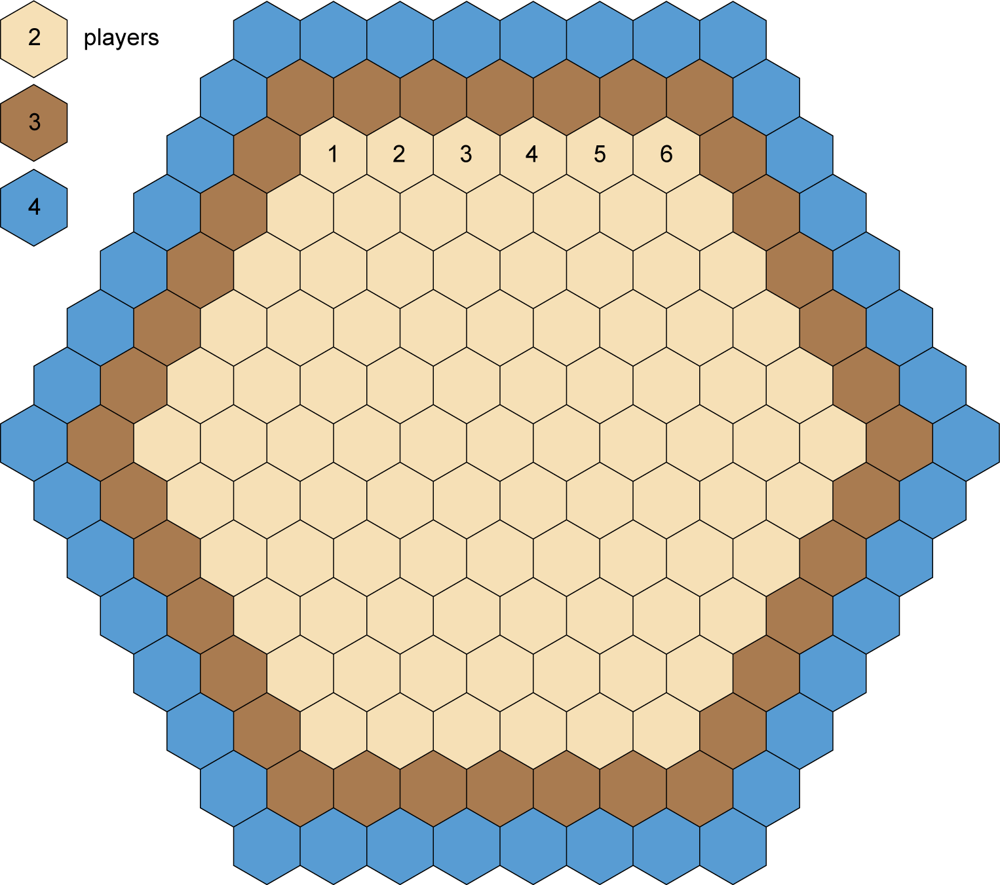
2 player map example:
3 player map example:
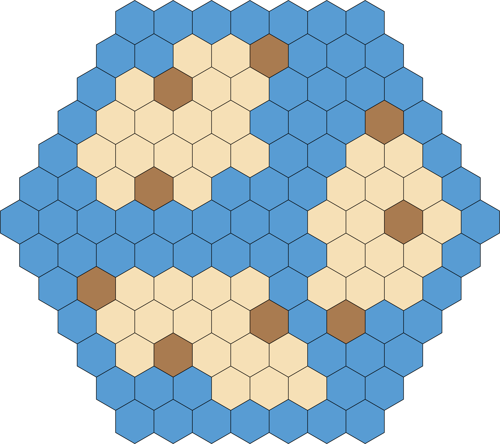
4 player map example:
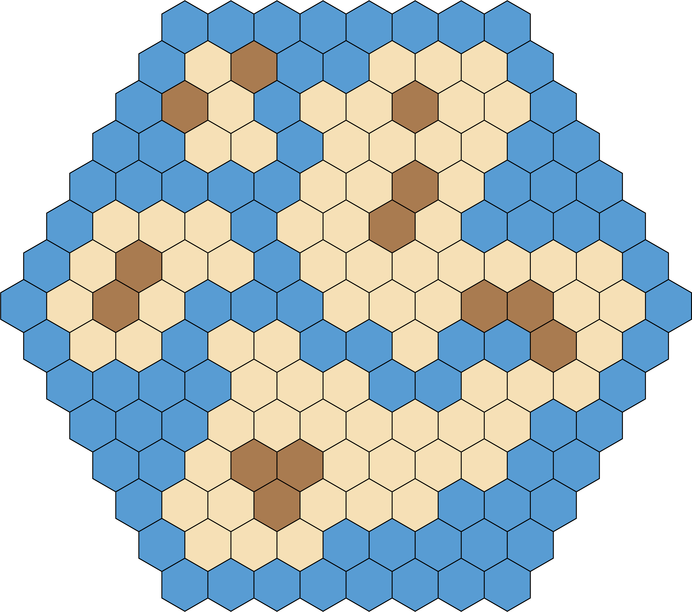
- Starting Units: Each player begins the game with the following units:
3 soldiers, 2 archers, 1 knight
3 ships, 2 longships, 1 galleon
3 camps, 2 forts, 1 castle
6 walls
1 artillery
- Prevailing Winds: Determine the direction of prevailing by flipping the Prevailing Winds Token. Place it in the center of the map.
- Turn Order:
Turn order is the same direction as Prevailing Winds for the remainder of the game.
Randomly determine which player will go first.
- You are now ready to begin the game.
The game consists of 2 phases.
- Phase 1 - Build:
In turn order, players place their starting units on the map.
For advanced competitve play, place units one at a time.
For more casual, faster play, place units 2 or 3 at a time.
Continue until all starting units have been placed.
- Phase 2 - Battle:
Players may Recruit new combat units and Activate existing units.
Players may not build additional camps, forts, castles nor walls.
A round is defined as one revolution of player turns around the table.
After the Build Phase, a game lasts 3 rounds of Battle.
At the beginning of each Round every player receives 3 silver, 2 gold, and 1 gem.
- In any order, do one of the following:
- Repeat until player has no more gold or silver or voluntarily ends his turn.
There are 3 types of currency:
- Silver: Used to Activate combat units.
- Gold: Used to Recruit new combat units.
- Gems: Can be used as either 1 gold or silver.
There are 3 types of hexes:
- Land
- Sea
- Mountains (Can not be occupied or built on)
The sea beyond the border of the map is the deep, open ocean, where strong, prevailing winds greatly enhance a sailor's ability to travel long distances.
When ships move out into the deep sea, they may take advantage of the prevailing winds to travel from one edge of the map to the next adjacent edge in addition to each ship's normal movement range. Though they must travel in the same direction as the prevailing winds, which are either clockwise or counter-clockwise around the map.
Player's ships may enter the prevailing winds from any border sea hex, and exit into any border sea hex on the next edge of the map.
In this example, the caravel is able to move into the prevailing winds and sail around the penninsula because the winds are clockwise and it has a movement range of 6.

Ships may not end their movement in the deep ocean. Ships must use 1 movement to enter prevailing winds and 1 movement to exit. If a ship does not have 2 spare movements it may not use prevailing winds.
The galleon here is too far away from the edge of the map to make use of prevailing winds because it only has a movement range of 4.
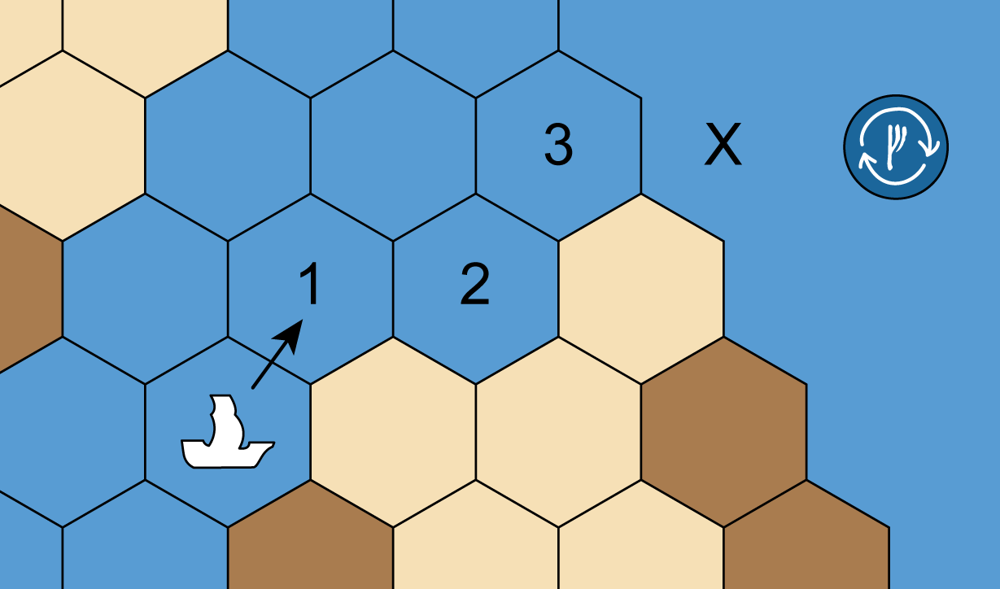
Each hex on the map may only be occupied by 3 or less units.
Buildings do not count toward occupancy.
Artillery does not count toward occupancy.
Prisoners do not count toward occupancy.
- Ship: A small, maneuverable sailing ship with lateen sails, capable of basic attacking and defending and the most movement range of all naval units. 6 movement, value of 1
- Galleon: Large warship with powerful cannons, but slower and less sea-worthy. build limit 1, 4 movement, 3 attack range* (diminishing damage), value of 3
- Longship: A large, oar-powered ship primarily for transporting troops. 5 movement, +3 transport, -attack, -defend, build limit 3, value of 2
Longships can transport up to 3 land units of any type.
Longships can not attack or defend other ships or coastal buildings.
Archers on a longship can attack coastal hexes or enemy ships.
Archers on a longship can defend it from attacking ships.
Soldiers and Knights on a longship can not defend it from other ships.
If a Longship is adjacent to a building, units can be recruited directly onto the ship.
Embarking and Disembarking Longships:
Loading and unloading units from a Longship to adjacent hexes is a secondary action.
Longships may pick up and drop off land units at any point before, during, or after its movement.
1. The Longship is activated and embarks an adjacent soldier and knight:
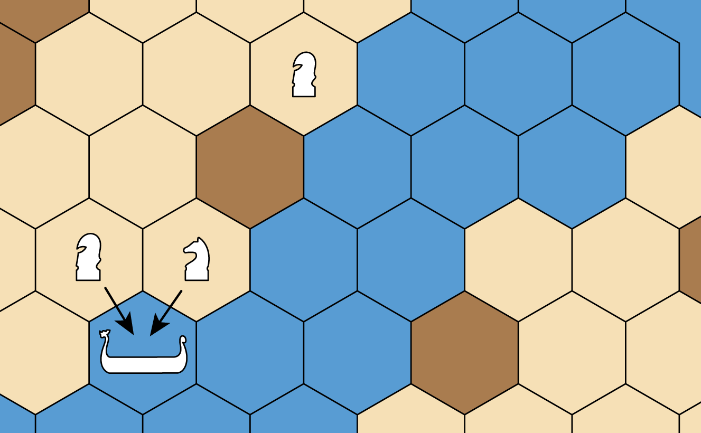
2. The Longship moves 3 hexes and embarks an additional soldier:

3. The Longship completes its movement and disembarks all units:
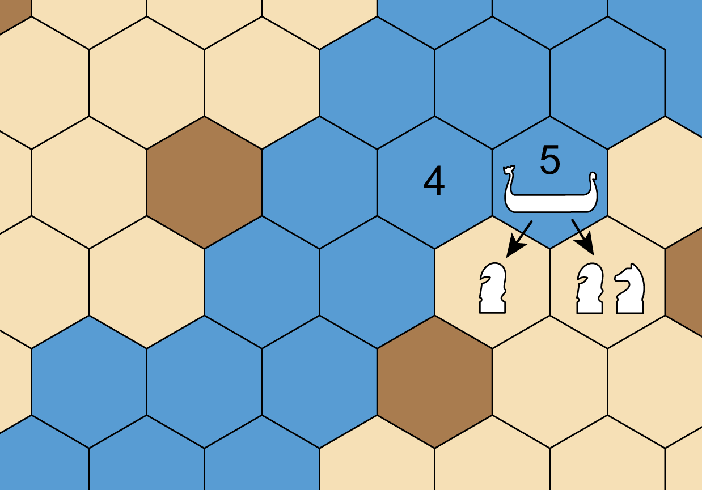
+ Land Units
- Soldiers: 3 movement, value of 1
- Archer: 2 movement, 2 attack range* (diminishing damage), value of 2
- Knights: 1 movement, value of 3
New Units are Recruited simply by paying their value in Gold.
Recruited land units are placed on or adjacent to any of the player's buildings.
Recruited ships are placed on any sea hex adjacent to any of a player's coastal buildings (in order to Recruit new ships, players must have at least one camp, fort or castle on the coast)
When placing Recruited units players must respect maximum occupancy rule.
Units are Activated simply by paying their value in Silver.
An activated unit can execute 3 primary actions.
Once the player has resolved a unit's actions, lay the piece on its side to denote that it has completed its actions.
Each Unit can only be activated once per turn. At the end of the turn, reset all activated units to their upright position.
Each action must be unique. For example, a player may not attack three times.
Activation and subsequent actions can occur at any point in a player's turn, but once a unit is activated the player must execute all its actions immediately or execute some and forfeit the others, before Activating or Recruiting any additional Units.
Players may not Activate more than one unit simultaneously, however there is no limit to the number of units they can Activate sequentially on their turn (provided they have enough Silver).
Units may move in any direction or combination of directions, up to a number of hexes equal to their movement range.
Units may move through hexes occupied by their own units or hexes at max occupancy, but must respect maximum occupancy rule and only end movement in an eligible hex.
Units may move through hexes that have an opponents building if unoccupied by opponent units.
Movement into a hex occupied by another player initiates a battle.
Attacking Units inflict an amount of damage equal to their value.
If the amount of damage inflicted is equal to or greater than the value of the opponent Unit, then that Unit is defeated.
If more than one opponent Unit is present on an attacked hex, damage must be inflicted on the opponent Units with least value first.
If the amount of damage inflicted is greater than the value of the opponent Unit that is attacked, any excess can be inflicted on other opponent Units on the same hex.
There are 2 types of attack:
- Close Combat:
Units can attack opponents in the same or adjacent hexes.
- Ranged:
Archers, Artillery and Galleons are capable of ranged attacks.
Ranged attacks can only extend in straight lines perpendicular to the center of each hex edge.
Ranged attacks can only extend a distance equal to the Unit's value.
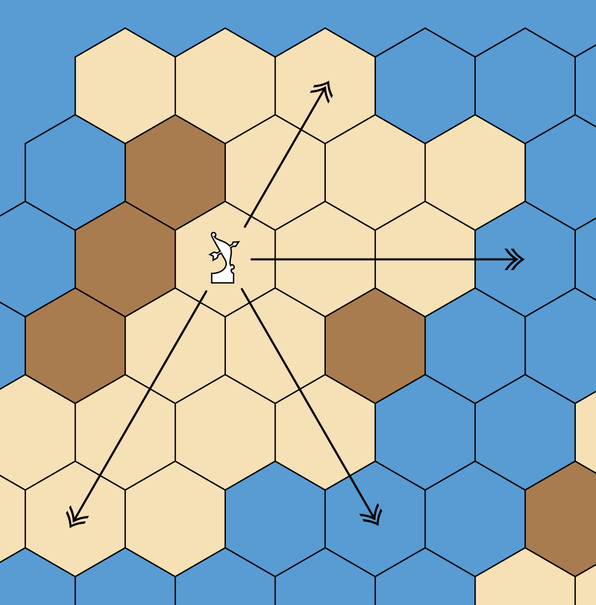
Ranged attacks are blocked by mountains but not walls or opponent Units.
Ranged attacks that defeat opponent Units at range do not capture.
The defeated Unit is simply removed from the board.
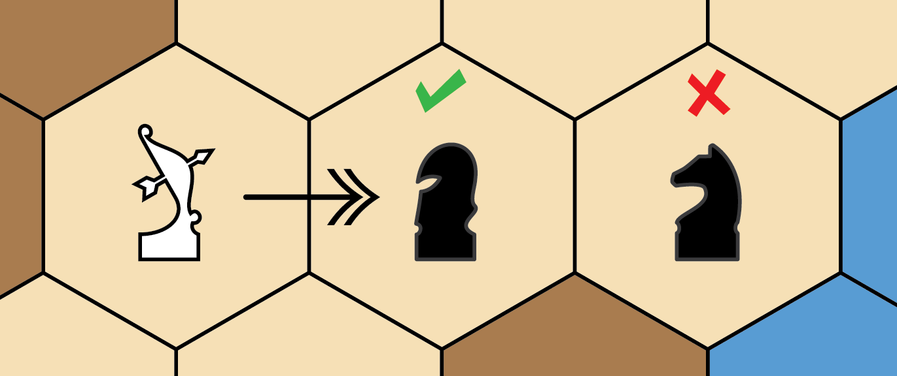
-
Flanking: The attacker may add 1 additional damage for attacking from a flank, 2 for attacking from a rear flank, and 3 for attacking from the rear.
Feint: The 'front' of a hex is determined by the direction of the first attack. Only subsequent attacks may utilize Flanking advantage.
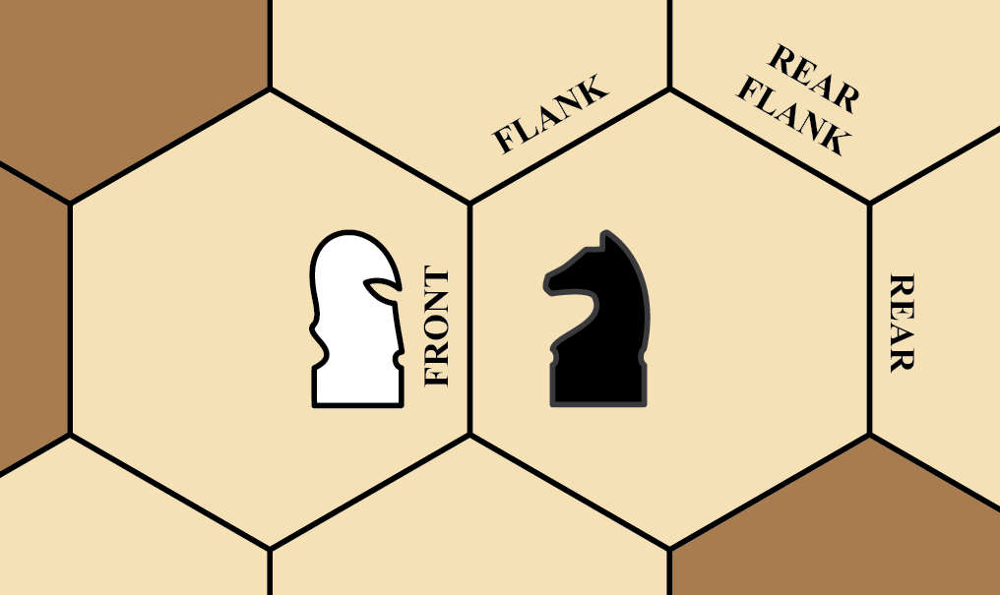
Example:
1. White to play
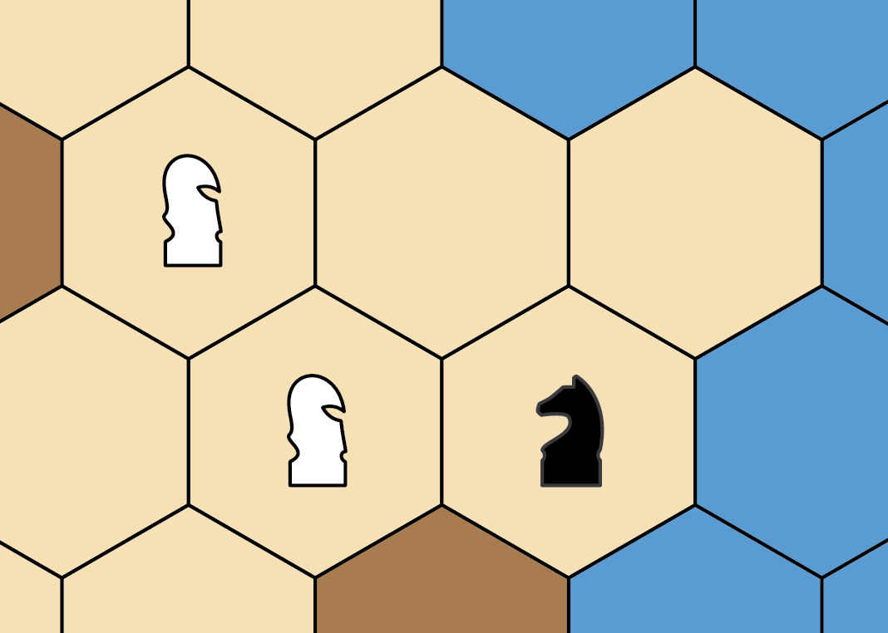
2. White Soldier attacks Black Knight and inflicts 1 damage.
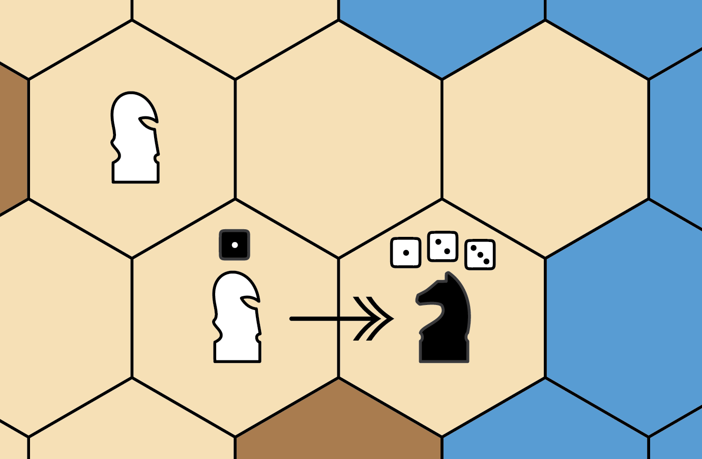
3. White Soldier moves and attacks Black Knight from rear flank and inflicts 1 damage for Soldier value plus 2 for rear flank advantage, enough to capture.
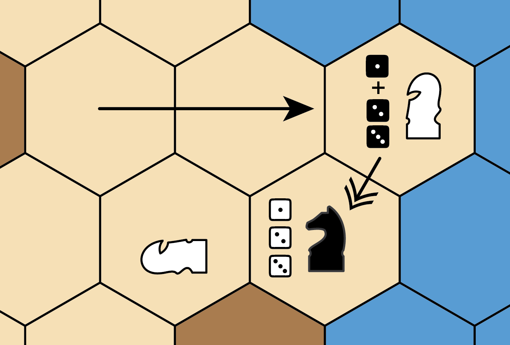
-
Attrition: The attacker may add 2 additional damage for attacking the same hex a third time on the same turn.
Land Victory: If the attacker wins a land battle, the defeated unit is captured (unless Ranged Attack at range greater than 1). Place the captured piece by the victor's nearest Building. That Unit is now considered a prisoner.
Sea Victory: If the attacker wins at sea, the victor sinks the loser's ship. Remove it from the board and place it in an area near him designated as his ship graveyard.
Sinking a Longship loaded with Units: If a Longship loaded with Units is defeated in Naval battle, the victor captures all units aboard and sinks the Longship. However, if Archers or Units with Artillery are aboard, they must be defeated prior to sinking the Longship.
Example:
1. Black must first attack the Archer defending the Longship. Black captures white Archer:
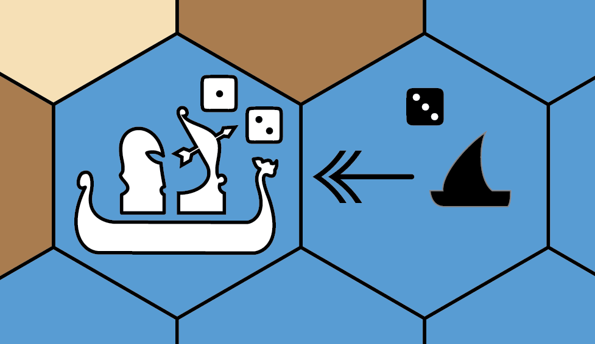
2. Black attacks again from a rear flank. White rolls 2 defense dice for value of longship. Black wins battle, sinks white longship and captures white infantry.
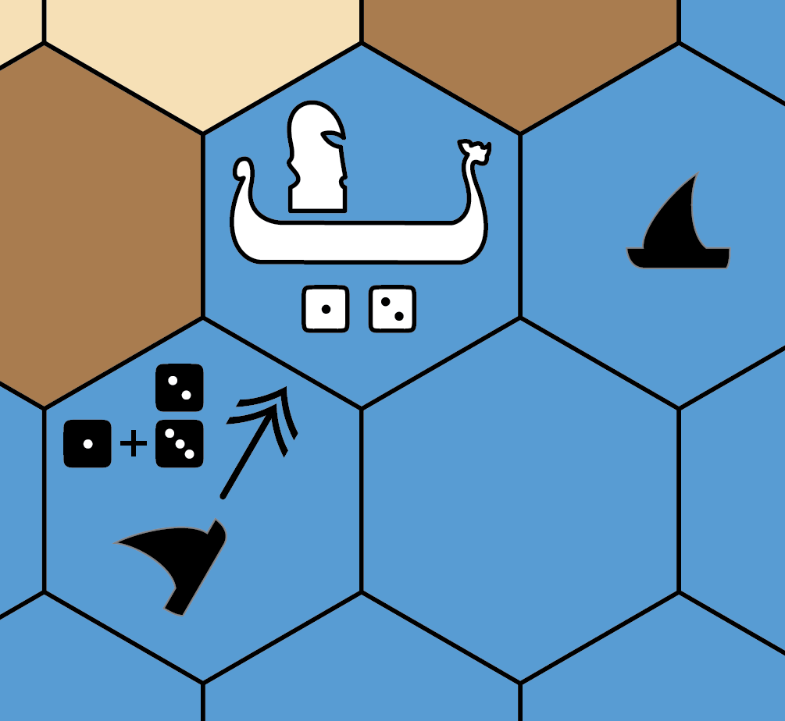
Occupation: The attacker may optionally move his victorious Unit onto the hex that was attacked if no opponent Units remain.
Activated Units occupying a hex adjacent to an opponent Wall may expend a primary Attack Action to inflict damage on the Wall.
If 3 or more damage is inflicted on an opponent wall, it is destroyed and removed from the board.
Ships may inflict damage to coastal walls.
Players may expend an activated Unit Primary Action to seize opponent Buildings.
Conditions: The following must be true in order to seize:
- The seizing Unit is located on or adjacent to the hex with the Building to be seized
- The Building to be seized is undefended
Diagram.
If the Building is defended, the attacking player must first defeat all defenders.
To seize a Building, a player removes it from the board and replaces it with an equivalent Building of their own color. He may then move the seizing unit onto the hex.
Rescue: If a player seizes a Building with prisoners, all prisoners belonging to him are freed and can now be Activated. Any prisoners belonging to other players become the prisoners of the Building's new owner.
Seizing Walls: Any walls on hexes that are seized by an opponent also change ownership only if there are no adjacent hexes occupied by the original owner of the wall. This is not an all or none condition. It is possible that some walls could be converted and others not. Diagram
Units may defend a Building if they are located on the same hex.
Units may defend a Building if they are located on a hex adjacent to both the attacker and the unit they are defending. Diagram.
Units may defend other Units only if they are of higher value.
Once per turn a player may discharge any land unit, remove it from the board, and Recruit a new unit of the same type (at no cost), and place it on or adjacent to any of their Buildings.
Units may not attack or move through opponent walls, however a player's own units may move freely or attack through his own walls
Artillery can be fired by any Land Unit on the same hex.
Firing Artillery expends the attack action of the Unit that is firing.
Artillery can be fired only once per turn by each Unit, but can be fired multiple times in one turn by multiple Units.
Artillery can be moved by any unit, up to the same movement range as the unit.
Artillery can be seized and fired by an opponent if no Unit is defending it.
 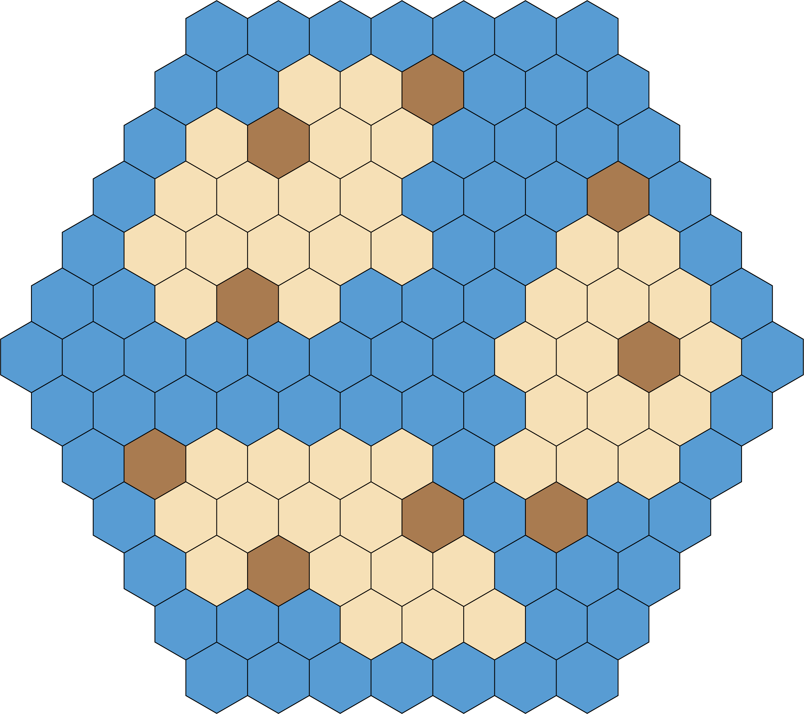4 player map example: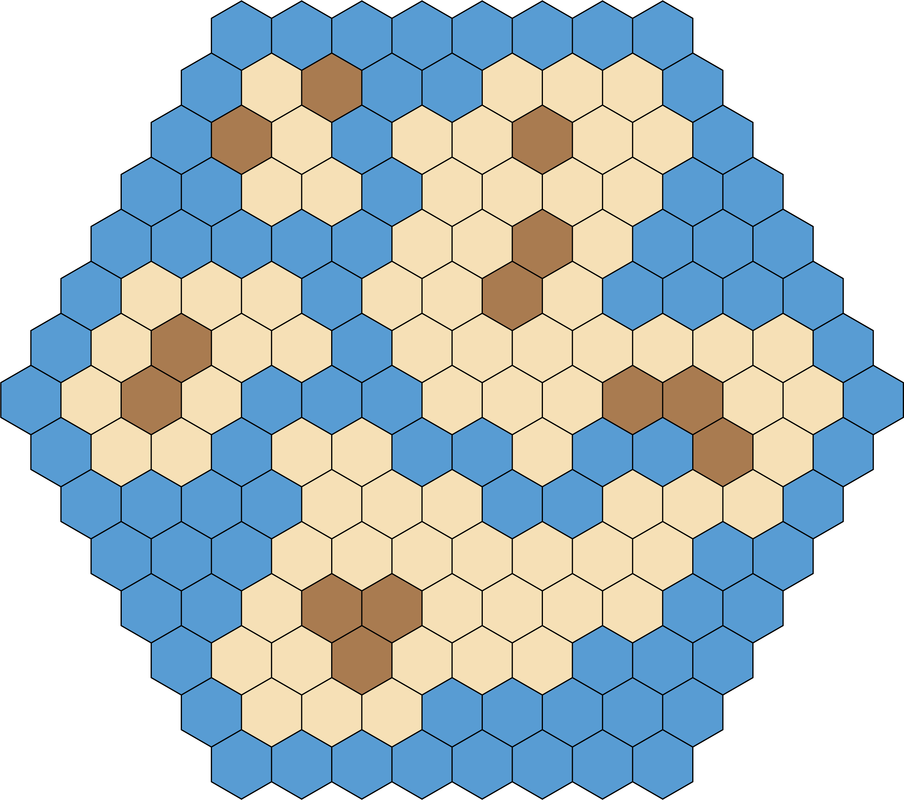
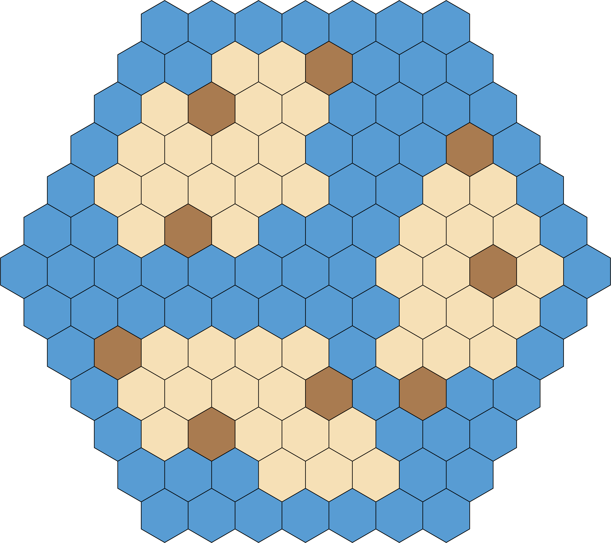4 player map example: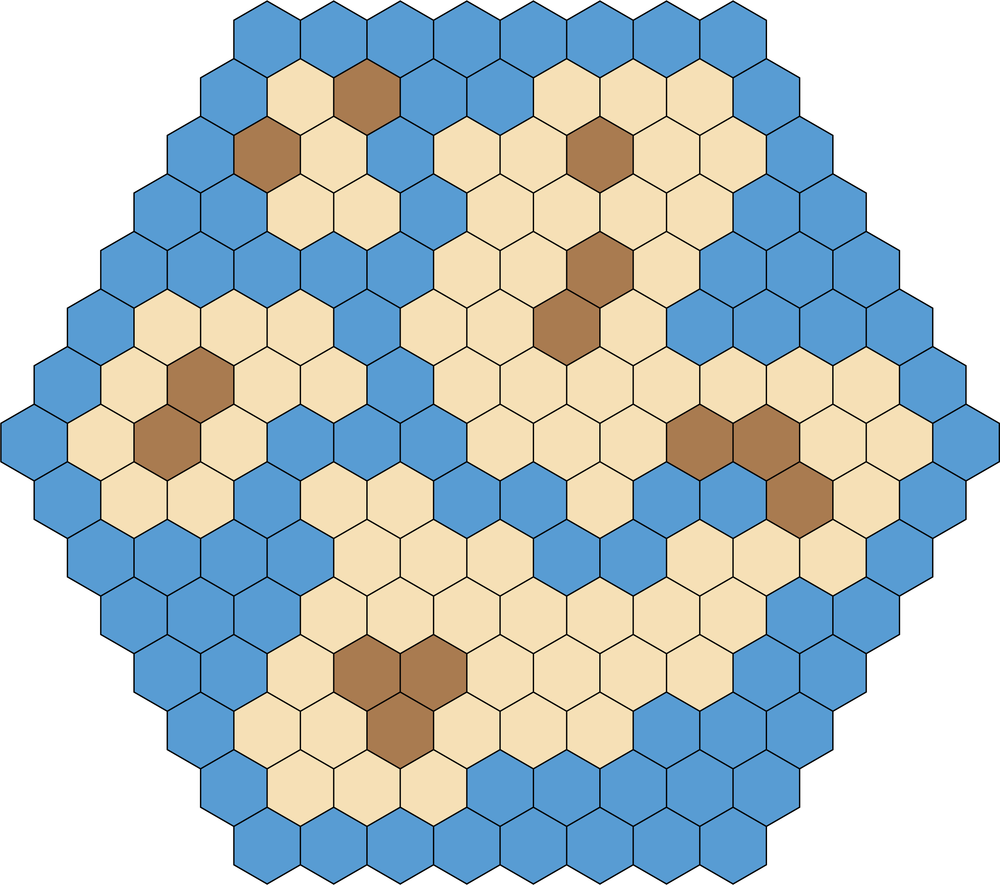